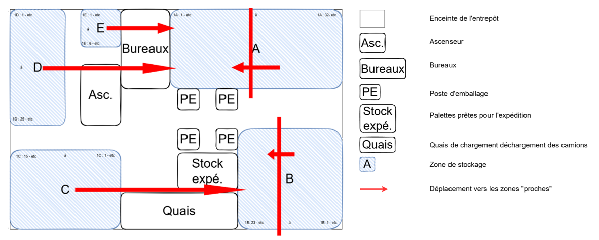
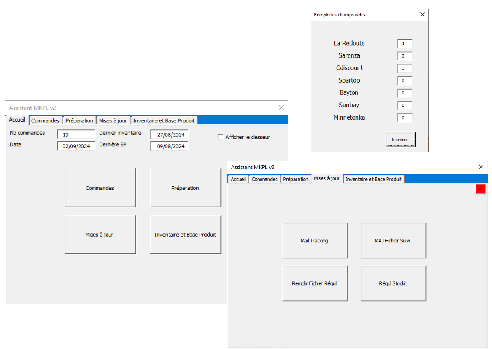

Stage ingénieur adjoint
Style Network International
Amélioration continue et optimisation des stocks, en B2B comme en B2C, chez un distributeur de textile, chaussures, maroquinerie et accessoires de mode.
SNI est une entreprise spécialisée dans la commercialisation et la distribution de textile, chaussures, maroquinerie et divers accessoires de mode, aussi bien en B2B qu'en B2C. L'entreprise commercialise et distribue ses propres marques mais aussi d'autres marques sous licence.
Comment réduire les temps d'expédition des commandes, de la réception à la préparation, l'emballage et l'expédition ?
Projet 1 — Optimisation des stocks (B2B drop-shipping)
Contexte
Lors de la préparation des commandes, les préparateurs se déplacent en étoile autour des tables d'emballage. Ils récupèrent une liste papier des références à collecter, déposent les articles à la table d'emballage, puis passent à la liste suivante.
Objectif
Minimiser les temps d'expédition des commandes en réduisant les distances parcourues par les préparateurs, et donc les temps de préparation.
Axe d'amélioration
Analyser les ventes par référence (en quantité et en fréquence), croiser cette analyse avec l'emplacement dans l'entrepôt, puis mettre en place un indicateur définissant si la référence doit être déplacée ou non.
En pratique
Extraction ERP des ventes des deux dernières années et analyse ABC/XYZ. L'analyse ABC hiérarchise les articles selon leur volume de ventes, tandis que l'analyse XYZ complète cette lecture en tenant compte de la variabilité de la demande (écart-type / moyenne).
- A : les articles les plus importants - les 80 premiers pourcents des références les plus vendues.
- B : des articles de moyenne importance - de 80 à 95 %.
- C : les articles les moins critiques - les 5 derniers pourcents.
- X : demande régulière et prévisible - coefficient de variation < 0,2.
- Y : demande moyennement variable, souvent saisonnière - entre 0,2 et 0,6.
- Z : demande très irrégulière, difficile à anticiper - coefficient de variation > 0,6.
Chaque référence est ainsi croisée (A|X, A|Y, A|Z, B|X… jusqu'à C|Z). En définissant une zone « proche » et une zone « éloignée » des tables d'emballage, l'objectif était d'identifier les références A|X et A|Y situées en zone éloignée pour les rapprocher, réduisant ainsi les distances parcourues par les préparateurs.

Résultats
Ce projet a abouti à la formulation de recommandations. Toutefois, la mise en œuvre du déplacement des références n’a pas été possible en raison de la forte activité saisonnière observée durant la période de stage. Cette opération aurait en effet nécessité l’arrêt complet de la préparation des commandes pendant plusieurs jours, ce qui n’était pas envisageable dans ce contexte.
Projet 2 — Amélioration continue (B2C Marketplace)
Contexte
La partie Marketplace regroupe plusieurs tâches opérationnelles récurrentes : renseigner différentes bases de données internes (fichiers Excel), réserver les créneaux d'enlèvement auprès des transporteurs et imprimer les documents nécessaires (bons de commande, factures, bons de retour, étiquettes de transport).
Objectif
Minimiser les temps d'expédition des commandes en réduisant le temps consacré aux tâches administratives et opérationnelles.
Axe d'amélioration
Développement d'un UserForm VBA centralisant et automatisant l'ensemble des tâches à réaliser entre la réception des commandes Marketplace et leur expédition.
En pratique
Étude UML- Expression du besoin et dérivation en exigences.
- Diagramme de cas d'utilisation.
- Diagramme de classes.
- Diagramme de navigation.
Codage en VBA du UserForm, avec une fonctionnalité de lecture de PDF développée en Python par souci d'optimisation, puis intégrée au code VBA.

Conduite du changement
- Démonstration : observation du traitement des commandes Marketplace, avec explications détaillées.
- Prise en main guidée : traitement des commandes par l'équipe, accompagné pas à pas.
- Autonomie : utilisation autonome de l'application, avec un accompagnement disponible en cas de besoin.
Un guide d'utilisation et de maintenance de l'application a également été rédigé.
Résultats
- Diminution des erreurs humaines dans le traitement des commandes.
- Une libération de 20 % du temps quotidien de mobilisation du personnel consacré à ces tâches.